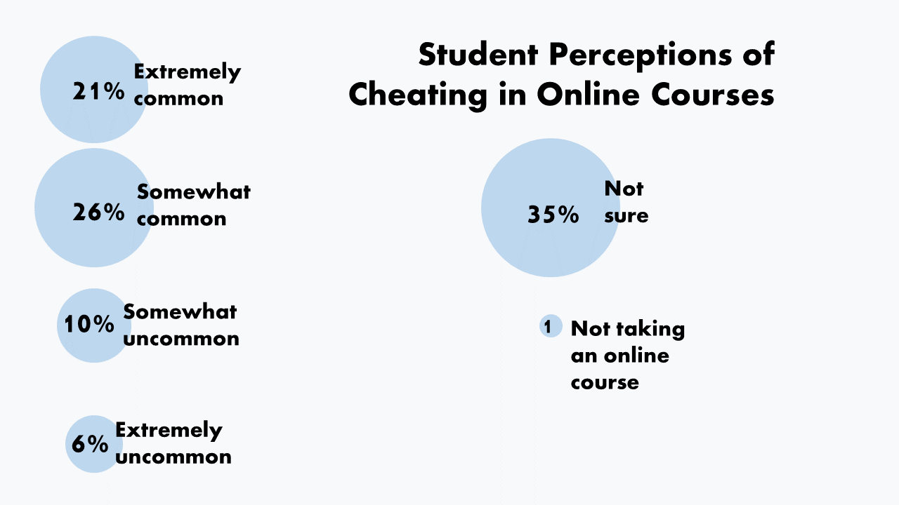

How It Works
Take a look at the graphic in this tweet:
What worked and what didn’t for college students learning through COVID-19 -results of our Student Voice survey about student success. (And one reason students may have learned less? #Cheating is up!) #highered #AcademicTwitter #SAchat https://t.co/ZfkPMC21UH pic.twitter.com/XyZ2h17ciJ
— MelissaEzarik (@MelissaEzarik) June 21, 2021
To interpret this graphic, the learner's eyes must travel in this pattern:
That's a lot of arrows--and, therefore, a lot of unnecessary distraction. Compare this graphic, which conveys the same information:
This graphic is much easier to interpet -- no cognitive load is wasted on moving the eyes back and forth and trying to remember which color correlates with which category. To follow the spatial contiguity principle of multimedia learning, words and pictures should be placed near each other.
Learn More
Watch this brief video to see an example of the spatial contiguity principle.
Your Turn
Consider each of these diagrams. Pay attention to how well each one follows the spatial contiguity principle. Then, compare your evaluation with ours.